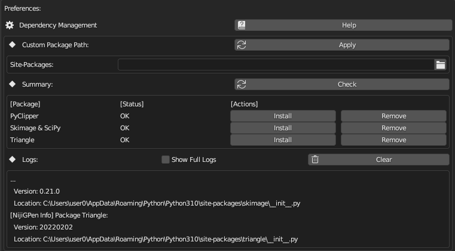

Python Packages #
NijiGPen’s functionality relies on some third-party Python packages, which have to be separately downloaded and installed. If you have no experience with Blender add-ons that have similar requirements, it is strongly suggested to read this page before using the add-on.
Dependency Summary #
The table below lists the packages required for each type of operation. Lacking a package will not affect operations that do not require it. For example, if you install this add-on just to import brushes and render PSD files, then you do not need to take any actions mentioned in this page.
| Function | PyClipper | Scipy & SkImage | Triangle |
|---|---|---|---|
| Polygon (Bool, Offset & Sweep) | Yes | ||
| Line Fitting | Yes | ||
| Line Shaping (Pinch, Taper) | |||
| Smart Fill | Yes | Yes | |
| Mesh Generation [See Below] | Yes | Optional | Optional |
| Rigging Using Mesh | |||
| Rigging Using Hints | Yes | ||
| Brush Import | |||
| Line Art Import | Yes | ||
| Color Image Import | Yes | Yes | |
| SVG & Palette Paste | |||
| PSD Render |
About Mesh Generation
Onlypyclipperis a mandatory requirement. However, the other packages are optional to enable some enhancements of the Interpolation operator:
scipyenables an advanced solver to calculate vertex depth.triangleenables an option to improve mesh quality, i.e., more uniformly distributed vertices.
Impact of Operating Systems #
The add-on is available and has been tested in Windows, Linux and MacOS. However, there may be some specific issues in each OS:
Depending on the way Blender is installed, some additional attentions may be needed besides the normal package installation process.
- Portable or Steam: No additional action required.
- Official Installer: If Blender is installed in a system folder (e.g.,
C:\Program Files\Blender Foundation\), it is recommended to run Blender as administrator to ensure the dependencies installed correctly. - Microsoft Store: A custom package path is required to install packages. Normally, this will be handled automatically. Please refer to a later section for more information.
triangle package is not yet available for Apple silicon (M1/M2) devices. Please skip installing this package. It has only minor negative effects.Package Installation #

To install Python packages, the most straightforward way is the dependency manager in the add-on setting of the Preferences panel.
Click the “Check” button to detect which packages have been installed, and click “Install” button for those missing (Internet connection is required). The logs during the installation will be printed in the panel, which will also indicate if the installation is successful.
The “Remove” button works in the similar way to uninstall packages. However, it requires Blender to be restarted to apply the changes.
If the installation fails, the reason may be shown in the logs. You may also consider reading the following sections about the alternative methods and the FAQ.
Alternative Method 1: Custom Package Path #
Normally, packages are installed in Blender’s directory. However, in the Custom Package Path option, an additional path can be assigned for Blender to find and load the packages from. This option may be useful in the following scenarios:
- You have multiple instances of Blender and/or Python installed, and do not want to download the packages repeatedly.
- You do not have the write access to the Blender directory (e.g., when Blender is installed through Microsoft Store).
In the second case, the add-on will try to find this path automatically during the package installation. If that does not succeed, you may consider checking the following paths, which are some common places that packages may be installed to:
"[Your Blender Directory]/3.x/python/lib/site-packages" (Windows) "%USERPROFILE%\AppData\Roaming\Python\Python310\site-packages" (Linux) "~/.local/lib/python3.10/site-packages"
Alternative Method 2: Manual Installation #
The Python packages are installed and managed by pip. For Python users knowing how pip works, the required packages can also be installed manually using the commmand line or terminal:
- Enter Blender’s directory in the command line. An official manual is available.
- Enable the
pipmodule:./python -m ensurepip --upgrade - Install packages:
./python -m pip install pyclipper triangle scikit-image
You may consider these options when usingpip:--no-cache-dir,--force-reinstall,--only-binary.
FAQ #
The package installation succeeded, but the package status is still “Not Installed”.
site-packages. If such a path can be found in the logs, refer to the Custom Package Path method and enter this path.
Blender stops responding after hitting the Install button.
It is common that the download and installation may take some time. However, if Blender has no reponse for a long time, there might be network issues. Please make sure you have the Internet connection, and maybe use VPN if necessary.
It is possible that the display of logs can be lagged, until the operation finishes. To see the logs in real time, the same messages will also be shown in [Window] - [Toggle System Console] and without lags.